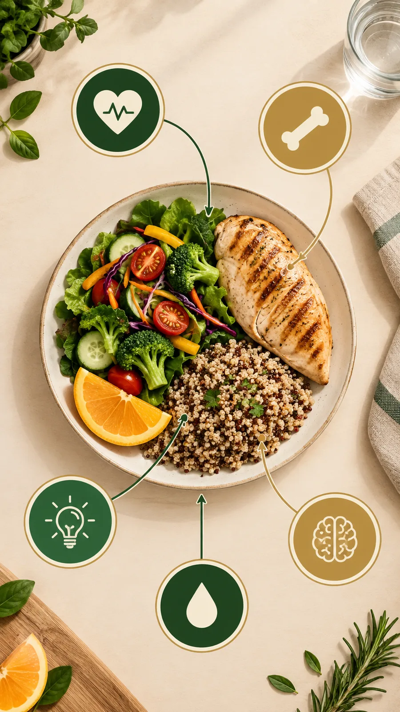
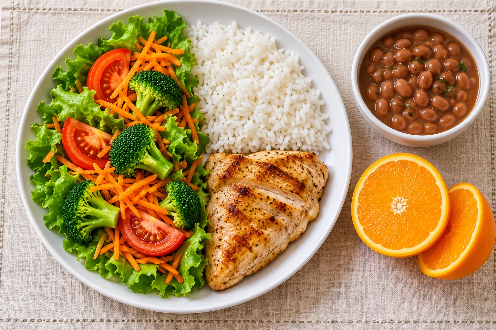
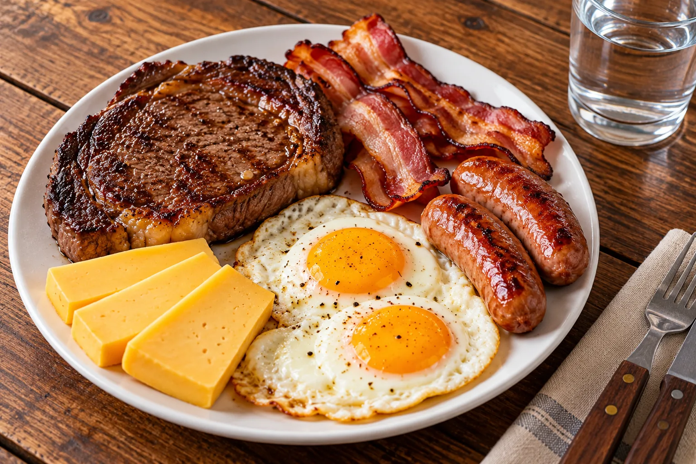
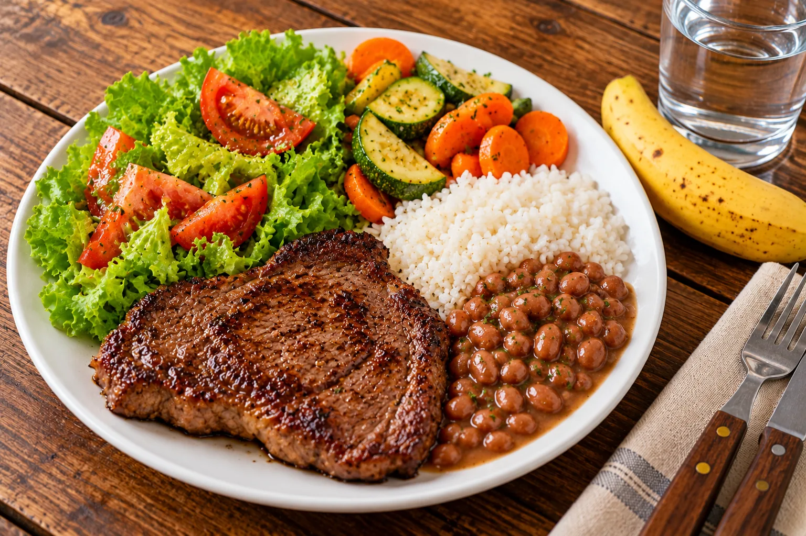
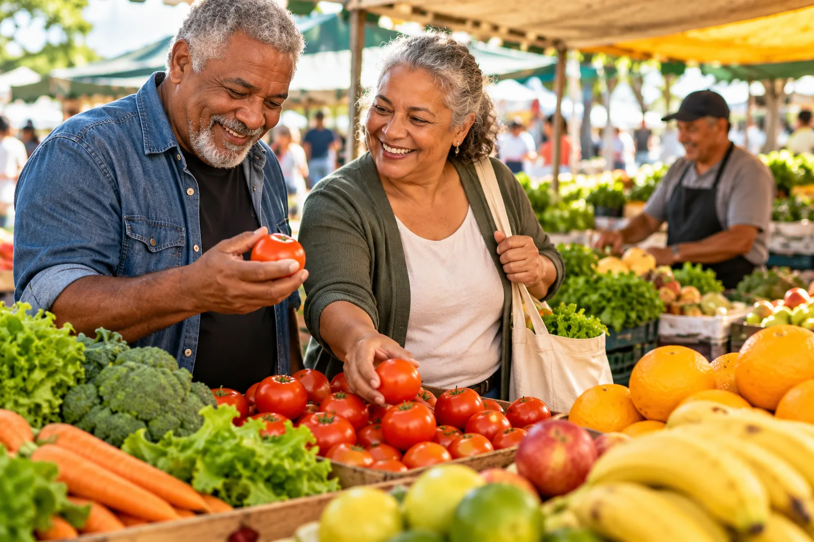

Alimentação simples para uma vida mais ativa
Comer bem depois dos 50 não é sobre dieta restritiva, é sobre ajustar o prato para o que o corpo mais precisa nesta fase: proteína, fibras, água, cálcio e algumas vitaminas-chave. Aqui você vê como fazer isso com comida de verdade, do dia a dia, sem gastar muito, e o que a ciência já sabe sobre a dieta carnívora que cresce nas redes.
Depois dos 50, o corpo muda de exigências. O metabolismo desacelera, a massa muscular tende a diminuir naturalmente e a sensação de sede fica mais fraca, o que faz muita gente se desidratar sem perceber. Nada disso significa que comer bem ficou mais difícil. Significa apenas que vale a pena entender o que o prato precisa oferecer, e por quê.
A boa notícia: a comida brasileira de todo dia, aquele arroz com feijão, o ovo, a salada, a fruta, já é uma base excelente. Na maioria das vezes, o que falta não é um alimento especial, e sim ajustar quantidades e criar alguns hábitos.
Os pilares do prato depois dos 50
Não existe alimento milagroso, mas existem grupos que merecem atenção redobrada nesta fase da vida. O mapa abaixo mostra como eles se encaixam num prato comum, do dia a dia:

Carnes, ovos, feijão e quinoa ajudam a preservar a massa muscular e a força.
Fortalecem os ossos e ajudam a prevenir quedas e fraturas.
Presentes em grãos integrais, ajudam a converter alimento em energia.
A sensação de sede diminui com a idade. Beber água com regularidade precisa virar hábito, sem esperar a vontade.
Frutas, vegetais coloridos e boas gorduras ajudam a preservar a função cognitiva.
Proteína: quanto e como distribuir
Com o passar dos anos, o corpo perde músculo aos poucos, de forma silenciosa. Quando essa perda fica grande, os médicos chamam de sarcopenia: a pessoa sente as pernas mais fracas, demora para levantar da cadeira, cansa na escada e fica mais sujeita a quedas. Músculo é autonomia, e a proteína é a matéria-prima dele.
Um grupo internacional de especialistas em envelhecimento (o PROT-AGE) concluiu que, depois dos 65, o corpo precisa de mais proteína do que precisava na juventude, porque passa a aproveitar menos o que recebe. A recomendação para pessoas saudáveis fica em torno de 1 a 1,2 grama de proteína por quilo de peso por dia. Para quem pesa 70 kg, isso dá algo entre 70 e 84 gramas por dia.
Mais importante do que o total é a distribuição. Muita gente come quase nada de proteína no café da manhã, um prato grande no almoço e só um lanche à noite. O ideal é ter uma boa porção em cada refeição principal, porque o músculo aproveita melhor quando recebe aos poucos ao longo do dia.
Como isso fica no prato, em medidas caseiras
Valores aproximados, só para você ter uma noção:
- 1 ovo: cerca de 6 gramas de proteína.
- 1 concha média de feijão: cerca de 5 a 6 gramas.
- 1 filé médio de frango (100 g): cerca de 30 gramas.
- 1 posta média de peixe (100 g): cerca de 20 a 25 gramas.
- 1 copo de leite (200 ml): cerca de 6 gramas.
- 1 pote de iogurte natural: cerca de 6 a 8 gramas.
- 1 fatia média de queijo minas (30 g): cerca de 5 gramas.
Um exemplo de dia: dois ovos mexidos e um copo de leite no café da manhã; arroz, feijão e um filé de frango no almoço; um iogurte à tarde; uma sopa com carne desfiada ou uma omelete no jantar. Sem nada de especial, só comida de casa bem distribuída.
Atenção: quem tem doença nos rins precisa de orientação própria sobre a quantidade de proteína, que pode ser menor. Nesse caso, siga sempre o que o seu médico ou nutricionista indicar.
Proteína sozinha não constrói músculo. Ela funciona junto com o movimento: comer bem e se exercitar são parceiros.
Fibras: a favor da digestão e da saciedade
Vegetais, frutas com casca, grãos integrais e leguminosas mantêm o intestino funcionando bem e ajudam a controlar a fome entre as refeições. Também ajudam a controlar o açúcar e o colesterol no sangue. É um dos ajustes mais simples de fazer:
- Trocar o arroz branco pelo integral, ou misturar meio a meio no começo.
- Deixar a casca da fruta quando ela pode ser comida, como na maçã, na pera e na goiaba.
- Começar o almoço e o jantar pela salada.
- Não abandonar o feijão: ele é fibra e proteína ao mesmo tempo.
- Colocar uma colher de aveia no iogurte, no mingau ou na vitamina.
Um cuidado: ao aumentar as fibras, aumente também a água. Fibra sem líquido pode prender o intestino em vez de soltar.
Hidratação: a sede avisa tarde
Com a idade, o sinal de sede fica mais fraco. Muita gente passa o dia inteiro com um copo de café e quase nada de água, e só percebe quando já está desidratada. E a desidratação nem sempre aparece como sede:
- Urina escura ou em pouca quantidade.
- Boca seca e lábios rachados.
- Cansaço, dor de cabeça ou tontura ao levantar.
- Intestino preso.
- Confusão ou sonolência fora do comum, sinal que merece atenção médica, principalmente em pessoas mais idosas.
Jeitos simples de beber mais
- Deixar uma garrafa de água sempre à vista, na mesa, na bancada, no carro.
- Beber um copo de água ao acordar e outro junto de cada refeição.
- Variar com chás sem açúcar, água com rodelas de limão ou folhas de hortelã.
- Contar com a ajuda dos alimentos: melancia, laranja, abacaxi, sopas e caldos também hidratam.
- Nos dias quentes ou depois de caminhar, beber mais, mesmo sem vontade.
Quem tem problema no coração ou nos rins pode ter recomendação de limitar os líquidos. Nesse caso, vale a orientação do médico, não a regra geral.
Cálcio e vitamina D: ossos firmes para não cair
Depois dos 50, os ossos ficam mais frágeis, principalmente nas mulheres depois da menopausa. Uma queda que antes seria só um susto pode virar uma fratura de punho ou de quadril. O cálcio é o material dos ossos, e a vitamina D é quem ajuda o corpo a aproveitar esse cálcio.
Onde encontrar cálcio na comida:
- Leite, iogurte e queijos.
- Sardinha, de preferência comida com a espinha (a enlatada é prática e barata).
- Verduras verde-escuras, como couve e brócolis.
- Gergelim, tofu e feijão, em quantidades menores.
A vitamina D vem principalmente do sol na pele. Com a idade, a pele produz menos vitamina D, e muita gente passa o dia dentro de casa. Um pouco de sol nos braços e nas pernas, em horários mais amenos, ajuda. Peixes como a sardinha e a gema do ovo também têm um pouco.
Suplemento de cálcio ou de vitamina D só com orientação. O médico pede o exame e diz se você precisa, e quanto. Tomar por conta própria, em excesso, também faz mal.
Montando o prato na prática
Um jeito fácil de acertar sem precisar pesar nada é imaginar o prato dividido em partes. É o chamado "método do prato", muito usado em orientação alimentar:

- Metade do prato: verduras e legumes, crus ou cozidos. Quanto mais colorido, melhor.
- Um quarto: proteína, como carne, frango, peixe ou ovo.
- Um quarto: arroz, mandioca, batata, inhame ou macarrão.
- Ao lado: a concha de feijão, e uma fruta de sobremesa.
O Guia Alimentar para a População Brasileira, do Ministério da Saúde, resume a ideia numa regra de ouro: dar preferência aos alimentos in natura ou minimamente processados (os que vêm da feira, do açougue, do campo) e às preparações feitas em casa, em vez dos ultraprocessados.
Um dia inteiro, com comida comum
- Café da manhã: pão francês ou cuscuz com ovo mexido, café com leite e uma fruta.
- Almoço: salada de alface e tomate, arroz, feijão, frango ou carne moída refogada com legumes.
- Lanche da tarde: iogurte natural com banana e aveia, ou uma fatia de queijo com fruta.
- Jantar: sopa de legumes com carne ou frango desfiado, ou omelete com salada.
E se o prato for só carne? O que se sabe sobre a dieta carnívora
Nos últimos anos, cresceu no YouTube e nas redes sociais a chamada dieta carnívora: comer apenas alimentos de origem animal (carne, ovo, peixe, às vezes queijo e manteiga) e tirar do prato tudo o que vem das plantas. Nada de arroz, feijão, fruta, verdura ou legume. Os vídeos mostram pessoas que emagreceram e dizem ter mais disposição, e muita gente com mais de 50 anos tem se interessado.
Por que algumas pessoas dizem que se sentem melhor
É preciso ser honesto: o relato de melhora existe, e tem explicação. Quem entra nessa dieta costuma cortar de uma vez o açúcar, o refrigerante, o pão de pacote, o salgadinho e os ultraprocessados. Também passa a comer bastante proteína, que dá saciedade. Só essas mudanças já podem fazer a pessoa perder peso e melhorar a glicose no começo. Os pesquisadores lembram que essas melhoras são as mesmas já vistas em outras dietas com pouco carboidrato, ou seja, não vêm de comer só carne, e sim de parar de comer o que fazia mal.
Além disso, parte do peso que some nas primeiras semanas é água, não gordura: quando o carboidrato sai do prato, o corpo esvazia uma reserva de energia que fica guardada junto com água.


O que a ciência encontrou até agora
Em 2026, pesquisadores de uma universidade alemã reuniram tudo o que já foi publicado sobre a dieta carnívora em seres humanos. Acharam apenas nove estudos, quase todos pequenos, curtos e sem grupo de comparação. Alguns relatavam perda de peso e mais saciedade, mas os mesmos estudos mostravam o colesterol LDL (o "ruim") subindo, às vezes muito, e risco de falta de fibras, vitamina C, vitamina D, cálcio, magnésio e iodo. A conclusão dos próprios pesquisadores: ninguém sabe o que acontece com quem segue essa dieta por anos, porque isso nunca foi estudado.
Quando um vídeo garante que "a ciência comprova" a dieta carnívora, está dizendo mais do que a ciência sabe.
Por que os riscos pesam mais depois dos 50
Alerta sobre pratos 100% proteína: tirar completamente frutas, verduras, legumes, grãos e feijão não é um ajuste, é uma mudança radical. Se você tem mais de 50 anos, principalmente se tem colesterol alto, pressão alta, diabetes, problema nos rins ou toma remédios todos os dias, não comece esse tipo de dieta sem acompanhamento médico e exames. E desconfie de quem vende a solução pronta num vídeo.
Proteína é importante, sim. Mas ela não precisa expulsar o resto do prato para fazer bem.
Se o que chamou a sua atenção nesses vídeos foi a ideia de cortar o açúcar e os ultraprocessados e comer mais proteína, ótimo: dá para fazer exatamente isso mantendo o arroz com feijão, a salada e a fruta. É o que este artigo inteiro propõe.
Comer bem gastando pouco
Comida saudável não precisa ser cara. Muitas vezes, é o contrário: o que pesa no bolso costuma ser o biscoito, o refrigerante, o congelado pronto.

- Ovo e feijão estão entre as proteínas mais baratas que existem.
- Coxa e sobrecoxa de frango costumam custar bem menos que o peito e são igualmente nutritivas.
- Sardinha em lata traz proteína, cálcio e gorduras boas por um preço acessível.
- Frutas e legumes da estação são mais baratos e mais saborosos. Pergunte ao feirante o que está na safra.
- No fim da feira, muitas bancas baixam o preço. Vale a pena dar uma passada.
- Cozinhar em quantidade e congelar em porções economiza tempo, gás e evita o delivery nos dias de preguiça.
Sal, açúcar e ultraprocessados: aprendendo a ler o rótulo
Desde outubro de 2022, muitos alimentos embalados no Brasil trazem na frente da embalagem um selo com o desenho de uma lupa, criado pela Anvisa. Ele avisa quando o produto é "alto em" açúcar adicionado, gordura saturada ou sódio (o sal).
- Viu a lupa? Não quer dizer que é proibido, mas que é para comer de vez em quando, e não todo dia.
- Leia a lista de ingredientes. Ela vem em ordem: o primeiro item é o que tem em maior quantidade. Se açúcar ou gordura aparecem logo no começo, desconfie.
- Lista comprida, cheia de nomes que você não conhece (corantes, aromatizantes, realçadores de sabor) costuma indicar um ultraprocessado.
- Embutidos, temperos prontos em cubo, macarrão instantâneo e salgadinhos são campeões de sódio, um cuidado importante para quem tem pressão alta.
Para dar sabor sem exagerar no sal, use os temperos naturais: alho, cebola, cheiro-verde, limão, orégano, pimenta-do-reino, cominho, açafrão.
Mitos e verdades
Proteína na terceira idade
"Depois de certa idade, a gente precisa comer menos proteína."
Mito. Para pessoas saudáveis, a necessidade aumenta com a idade, justamente para proteger os músculos. A exceção é quem tem doença nos rins, que precisa de orientação própria.
Ovo e colesterol
"Ovo faz mal, aumenta o colesterol."
Mito, em grande parte. Para a maioria das pessoas saudáveis, um ovo por dia cabe numa alimentação equilibrada. O que pesa mais no colesterol é o conjunto: excesso de gordura saturada, frituras e ultraprocessados. Quem tem diabetes, colesterol alto ou já teve infarto deve combinar a quantidade com o médico.
Suco ou fruta?
"Suco natural é a mesma coisa que comer a fruta."
Não é. No suco, boa parte da fibra fica no coador, e é fácil tomar o açúcar de três ou quatro laranjas de uma vez. A fruta inteira sacia mais e ajuda o intestino.
Suplementos e vitaminas
"Tomando um polivitamínico, não preciso me preocupar com a comida."
Mito. Suplemento serve para corrigir uma falta que o médico identificou, não para substituir o prato. A comida traz fibras e muitas substâncias que nenhum comprimido reúne.
Arroz e feijão
"Para emagrecer, tem que cortar o arroz e o feijão."
Mito. A dupla é uma combinação nutritiva e valorizada pelo próprio Guia Alimentar. O que faz diferença é a quantidade no prato e o que vem junto: trocar a fritura e o refrigerante ajuda muito mais do que cortar o feijão.
O que nasce debaixo da terra
"Tudo que cresce debaixo da terra dá diabetes."
Mito. Nesse grupo estão alimentos muito diferentes: cenoura, beterraba, cebola e alho têm pouco carboidrato. Batata, mandioca e inhame têm mais amido e pedem atenção à quantidade, mas não são vilões. Um grande estudo de Harvard, publicado em 2025, mostrou que o risco maior estava na batata frita; cozida, assada ou em purê não aumentou o risco de forma importante. O segredo é o preparo e a porção: cozidos ou assados, ocupando um quarto do prato. Quem já tem diabetes deve combinar as quantidades com o médico ou nutricionista.
Como começar sem complicar
Não é preciso reformular a alimentação inteira de uma vez. Algumas trocas realistas já fazem diferença:
- Inclua uma fonte de proteína em cada refeição principal: carne, ovo, peixe, feijão ou queijo.
- Deixe uma garrafa de água visível durante o dia, em vez de esperar sentir sede.
- Prefira frutas inteiras a sucos. A fibra da fruta ajuda na digestão e na saciedade.
- Troque um alimento ultraprocessado por vez, sem pressa. A rotina se ajusta melhor com mudanças pequenas e constantes.
- Sempre que puder, coma sentado à mesa, com calma e em companhia. O Guia Alimentar lembra que o jeito de comer também faz parte de comer bem.
Comer bem depois dos 50 não precisa virar uma tarefa complicada. Precisa, principalmente, virar rotina: um prato equilibrado de cada vez, um copo de água por vez, sem cobrança e sem culpa.
Não é sobre o prato perfeito. É sobre o prato possível, repetido todos os dias.
Importante: este conteúdo é educativo e não substitui avaliação, diagnóstico ou acompanhamento profissional. Antes de mudar sua alimentação, especialmente se você tem alguma condição de saúde, converse com um médico ou nutricionista.
Fontes e leituras científicas
- Bauer J. et al. (PROT-AGE Study Group) — Evidence-based recommendations for optimal dietary protein intake in older people. Journal of the American Medical Directors Association, 2013.
- Lietz A., Dapprich J., Fischer T. — Carnivore Diet: A Scoping Review of the Current Evidence, Potential Benefits and Risks. Nutrients, 2026 (Universidade de Ciências Aplicadas de Münster, Alemanha).
- Ministério da Saúde — Guia Alimentar para a População Brasileira, 2ª edição, 2014.
- Anvisa — RDC nº 429/2020 e IN nº 75/2020, sobre a rotulagem nutricional de alimentos embalados (em vigor desde outubro de 2022).
- Mousavi S. M. et al. — Total and specific potato intake and risk of type 2 diabetes: results from three US cohort studies and a substitution meta-analysis of prospective cohorts. BMJ, 2025 (Harvard T.H. Chan School of Public Health).
- Dietary Guidelines for Americans 2015–2020 — retirada do limite fixo de colesterol alimentar e foco no padrão alimentar como um todo.
- Sociedade Brasileira de Geriatria e Gerontologia — materiais sobre sarcopenia, quedas e alimentação da pessoa idosa.